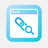

Les essentiels pour ouvrir et fermer vos aperçus.
Choisissez comment consulter vos liens.
Gardez le contrôle sur sa fermeture.
Pour ouvrir le dernier lien survolé : Alt + Maj + P . Raccourci modifiable dans chrome://extensions/shortcuts .
chrome://extensions/shortcuts
Visualisez vos changements avant de les sauvegarder.
Un thème connu ou votre propre palette.
Couleurs du thème sélectionné. Choisissez « Personnalisé » pour les modifier.
Vos thèmes apparaissent dans « Mes thèmes ». Un nom existant remplace sa palette.
Une pause temporaire ou une règle qui reste.
Jusqu’à réactivation ou redémarrage du navigateur.
Une règle par ligne. Valeurs : overlay , compact , split ou blocked . La règle la plus spécifique est prioritaire.
overlay
compact
split
blocked
Transférez vos préférences ou repartez de zéro.
Exportez vos préférences et vos thèmes personnels.
Fichier JSON, maximum 1 Mo. L’import remplace les réglages actuels.
Rétablir les préférences et effacer la bibliothèque de thèmes personnels.